물류관리사-2교시 (2019-07-20 기출문제)
1과목: 보관하역론
1. 보관의 원칙으로 옳지 않은 것을 모두 고른 것은?
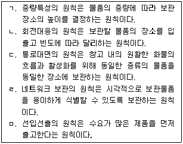
- ㄱ, ㄴ, ㄹ
- ㄱ, ㄷ, ㅁ
- ㄴ, ㄷ, ㄹ
- ㄴ, ㄷ, ㅁ
- ㄷ, ㄹ, ㅁ
(정답률: 52%)

2. 포장에 관한 설명으로 옳지 않은 것은?
- 포장 디자인의 3요소는 선, 형, 색채이다.
- 상업포장의 기본 기능은 판매촉진기능이다.
- 완충포장은 외부로부터 전달되는 힘과 충격으로부터 상품의 내ㆍ외부를 보호하기 위함이다.
- 포장합리화의 시스템화 및 단위화 원칙은 물류의 모든 활동이 유기적으로 연결되도록 시스템화하며, 포장화물의 단위화를 통해 포장의 합리화를 추구하는 것이다.
- 적정포장의 목적은 상품의 품질보전, 취급의 편의성 등 포장 물류 본연의 기능 최대화이므로 포장 비용은 중요한 고려 사항이 아니다.
(정답률: 74%)
3. 물류센터의 기능 및 역할에 관한 설명으로 옳지 않은 것은?
- 공급자와 수요자의 중간에 위치하여 수요와 공급을 통합하고 계획하여 효율화를 높이는 시설이다.
- 물류센터의 규모는 목표 재고량을 우선 산정한 후 서비스 수준에 따라서 결정된다.
- 물류센터의 설계 시 제품의 특성, 주문 특성, 설비 특성 등이 고려되어야 한다.
- 물류센터의 입지선정 시 경제적, 자연적, 입지적 요인 등을 고려해야 한다.
- 물류센터 입지의 결정에 있어서 관련 비용의 최소화를 고려해야 한다.
(정답률: 55%)
4. 물류센터 수가 증가함에 따라 발생하는 관리 요소의 변화로 옳지 않은 것은?
- 시설투자비용은 지속적으로 증가한다.
- 납기준수율이 증가한다.
- 수송 비용은 증가한다.
- 배송의 횟수가 증가하므로 배송 비용은 증가한다.
- 물류센터 수가 증가하므로 총 안전재고량은 증가한다.
(정답률: 60%)
5. 다음이 설명하는 물류시설은?
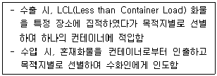
- CFS(Container Freight Station)
- 스톡 포인트(Stock Point)
- 보세구역
- 데포(Depot)
- ICD(Inland Container Depot)
(정답률: 74%)
6. 공동집배송단지의 운영효과에 관한 설명으로 옳지 않은 것은?
- 배송물량을 통합하여 계획 배송하므로 차량의 적재 효율을 높일 수 있다.
- 공동집배송단지를 사용하는 업체들의 공동 참여를 통해 대량 구매 및 계획 매입이 가능하다.
- 보관 수요를 통합 관리함으로써 업체별 보관 공간 및 관리 비용의 절감이 가능하다.
- 혼합배송이 가능하여 차량의 공차율이 증가한다.
- 물류 작업의 공동화를 통해 물류비 절감 효과가 있다.
(정답률: 74%)
7. 양면 골판지의 한쪽 면에 편면 골판지를 접합한 형태로서 비교적 무겁고 손상되기 쉬운 제품 혹은 청과물과 같은 수분을 포함하고 있는 제품 포장에 적합한 골판지는?
- 편면 골판지
- 이중양면 골판지
- 양면 골판지
- 삼중 골판지
- 삼중양면 골판지
(정답률: 47%)
8. 다음 설명과 일치하는 화물의 취급표시(화인) 방법으로 옳은 것은?
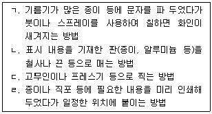
- ㄱ: 스텐실(Stencil), ㄴ: 태그(Tag), ㄷ: 스탬핑(Stamping), ㄹ: 레이블링(Labeling)
- ㄱ: 스탬핑(Stamping), ㄴ: 카빙(Carving), ㄷ: 태그(Tag), ㄹ: 스티커(Sticker)
- ㄱ: 스텐실(Stencil), ㄴ: 스티커(Sticker), ㄷ: 스탬핑(Stamping), ㄹ: 카빙(Carving)
- ㄱ: 스탬핑(Stamping), ㄴ: 태그(Tag), ㄷ: 카빙(Carving), ㄹ: 스텐실(Stencil)
- ㄱ: 스탬핑(Stamping), ㄴ: 태그(Tag), ㄷ: 스텐실(Stencil), ㄹ: 카빙(Carving)
(정답률: 70%)
9. A사는 현재 2곳의 공장에서 다른 제품을 생산하여 3곳의 수요처에 각각 제품을 공급하고 있다. 물류센터 한 곳을 신축하여 각 공장에서는 물류센터로 운송을 하고, 물류센터에서 3곳의 수요처로 운송할 계획이다. 물류센터와 기존시설과의 예상되는 1일 운송빈도는 아래 표와 같으며, 거리는 직각거리(Rectilinear Distance)로 가정한다. 총 이동거리(
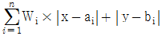
)를 최소화시키는 신규 물류센터의 최적 위치는?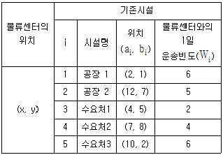
- (x, y) = (6.0, 4.0)
- (x, y) = (6.2, 3.6)
- (x, y) = (7.0, 2.0)
- (x, y) = (7.0, 5.0)
- (x, y) = (7.8, 3.7)
(정답률: 22%)
10. 물류센터의 설립을 위한 입지 결정단계에서 우선적으로 고려해야 할 사항이 아닌 것은?
- 토지 구입가격
- 해당 지역의 세금정책 및 유틸리티(전기, 상하수도, 가스 등) 비용
- 해당 지역의 가용노동인구 및 평균 임금수준
- 물류센터 내부 레이아웃
- 각종 법적 규제사항
(정답률: 59%)
11. 다음은 제조업에서 모기업과 부품공급을 하는 협력업체 사이의 물류효율화 방식에 관한 내용이다. 공동순회납품, 서열(Sequence) 공급, Set(혹은 Kit)공급 방식의 설명을 순서대로 옳게 나열한 것은?
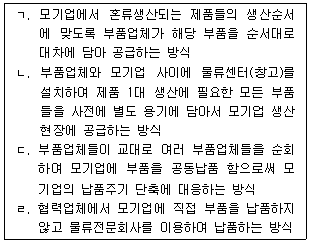
- ㄴ, ㄷ, ㄹ
- ㄷ, ㄱ, ㄴ
- ㄷ, ㄱ, ㄹ
- ㄷ, ㄴ, ㄱ
- ㄹ, ㄴ, ㄱ
(정답률: 63%)
12. 유닛로드의 종류 또는 크기를 결정하기 위해 고려해야 할 요인이 아닌 것은?
- 적재화물의 형태, 무게
- 적재화물의 적재형태
- 유닛로드의 운송수단
- 창고 조명의 밝기
- 하역장비의 종류와 특성
(정답률: 74%)
13. 1,100 mm × 1,100 mm의 표준파렛트에 가로 20 cm, 세로 30 cm, 높이 15 cm의 동일한 종이박스를 적재하려고 한다. 만일 파렛트의 적재 높이를 17 cm 이하로 유지해야 한다고 할 때, 최대 몇 개의 종이박스를 적재할 수 있는가?
- 18개
- 19개
- 20개
- 21개
- 22개
(정답률: 44%)
14. 24시간 운영하는 물류센터에 들어오는 트럭은 1일 평균 240대로 도착시간간격은 평균 6분으로 예상하고 있다. 트럭이 물류센터에서 상ㆍ하차 작업을 하는데 소요되는 시간은 평균 3시간이다. 물류센터에 트럭이 도착했을 때 가용한 도크가 없다면 트럭은 빈 도크가 나올 때까지 주차장에서 대기해야 하는데 고객서비스 차원에서 도착 즉시 도크를 사용할 수 있는 확률을 80 % 이상으로 유지하려고 한다. 이에 관한 내용으로 옳지 않은 것은?
- 트럭의 도착시간간격이 정확히 6분(상수)이고, 차량 당 상ㆍ하차시간이 정확히 3시간(상수) 걸린다면 이론적으로 필요한 도크의 수는 30개로 안전계수를 고려할 필요가 없다.
- 상ㆍ하차시간은 3시간(상수)이지만 도착시간간격이 평균 6분, 표준편차가 1분인 확률분포를 따른다면 도크의 수는 30개보다 커야 한다.
- 상ㆍ하차시간은 3시간(상수)이지만 도착시간간격이 평균 6분, 표준편차가 0.1분인 확률분포를 따른다면 도크의 수는 30개보다 작아도 된다.
- 도착시간간격이 평균 6분인 확률분포를 따르고 상ㆍ하차시간도 평균 3시간인 확률분포를 따른다면 도크의 수는 30개보다 커야 한다.
- 도착시간간격은 6분(상수)을 유지한 상황에서 상ㆍ하차시간을 2.5시간(상수)로 감소시킬 수 있다면 도크의 수는 30개보다 작아도 된다.
(정답률: 35%)
15. 파렛트 풀 시스템에 관한 설명으로 옳지 않은 것은?
- 리스ㆍ렌탈방식을 이용하면 송화주는 공파렛트의 회수에 대해 신경을 쓸 필요가 없다.
- 파렛트 풀 시스템에서도 지역간에 이동하는 파렛트 수량에 균형이 맞지 않기 때문에 공파렛트를 재배치해야 하는 문제점은 발생한다.
- 많은 기업에서는 파렛트를 일회용 소모품으로 생각하는 경우가 많은데 풀 시스템을 활용함으로써 친환경물류시스템 구축에도 도움이 된다.
- 파렛트 즉시교환방식은 화차에 화물이 적재된 파렛트를 선적하면 즉시 동일한 형태, 크기, 품질을 가지는 파렛트를 선적된 수량만큼 송화주에게 돌려주는 방식이다.
- 대차결재방식은 즉시교환방식의 단점을 개선하기 위해 고안된 방식으로 현장에서 즉시 파렛트를 교환하지 않고 일정 시간 내에 동일한 수량의 파렛트를 해당 철도역에 반환하도록 하는 방식이다.
(정답률: 34%)
16. 일관파렛트화에 관한 설명으로 옳은 것을 모두 고른 것은?
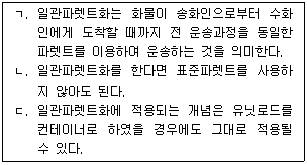
- ㄱ
- ㄱ, ㄴ
- ㄱ, ㄷ
- ㄴ, ㄷ
- ㄱ, ㄴ, ㄷ
(정답률: 64%)
17. 자동화창고에서 물품의 보관위치를 결정하는 방식에 관한 설명으로 옳지 않은 것은?
- 지정위치보관(Dedicated Storage)방식은 일반적으로 전체 보관소요 공간을 많이 차지한다.
- 지정위치보관(Dedicated Storage)방식은 일반적으로 품목별 보관소요 공간과 단위시간당 평균 입출고 횟수를 고려하여 보관위치를 사전 지정하여 운영한다.
- 임의위치보관(Randomized Storage)방식은 일반적으로 전체 보관소요 공간을 적게 차지한다.
- 등급별보관(Class-based Storage)방식은 보관품목의 입출고 빈도 등을 기준으로 등급을 설정하고, 동일 등급 내에서는 임의보관하는 방식으로 보관위치를 결정한다.
- 근거리 우선보관(Closest Open Location Storage)방식은 지정위치보관(Dedicated Storage)방식의 대표적 유형이다.
(정답률: 59%)
18. 완성품 배송센터의 규모를 결정하기 위한 목적으로 보관 품목의 2020년 수요를 예측하고자 한다. 2018년 수요 예측치와 실적치, 2019년 실적치가 아래의 표와 같다고 가정할 때, 평활상수(α) 0.4인 지수평활법을 활용한 2020년의 수요 예측치는?
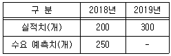
- 256개
- 258개
- 260개
- 262개
- 264개
(정답률: 57%)
19. DAS(Digital Assort System)에 관한 설명으로 옳지 않은 것은?
- 물품 보관셀에 표시기(display)를 설치하고 피킹작업자가 방문하여 표시량 만큼을 피킹한다.
- 보관장소와 주문별 분배장소가 별도로 필요하다.
- 소품종 대량출하에 더 적합하다.
- 고객별 주문 상품을 합포장하기에 적합한 분배시스템이다.
- 주문처별로 분배하는 파종식으로 볼 수 있다.
(정답률: 34%)
20. 랙(Rack)에 관한 설명으로 옳지 않은 것은?
- 파렛트 랙(Pallet Rack)은 주로 파렛트에 쌓아올린 물품의 보관에 이용한다.
- 캔틸레버 랙(Cantilever Rack)은 외팔지주걸이 구조로 기본 프레임에 암(Arm)을 결착하여 화물을 보관하는 랙으로 파이프, 목재 등 장척물 보관에 적합하다.
- 유동 랙(Flow Rack)은 화물을 한쪽 방향에서 넣으면 중력을 이용하여 순서대로 쌓이며, 인출할 때는 반대방향에서 화물을 출고하는 랙으로써 선입선출에 유용하다.
- 드라이브 인 랙(Drive-in Rack)은 선반을 다층식으로 겹쳐 쌓고, 현재 사용하고 있는 높이에서 천장까지의 사이를 이용하는 보관 설비로서 보관효율과 공간활용도가 높다.
- 모빌 랙(Mobile Rack)은 레일을 이용하여 직선적으로 수평 이동되는 랙으로 통로를 대폭 절약할 수 있어 다품종 소량의 보관에 적합하다.
(정답률: 51%)
21. 창고관리시스템(WMS: Warehouse Management System)에 관한 설명으로 옳지 않은 것은?
- 다품종 소량생산 품목보다 소품종 대량생산 품목의 창고관리에 더 효과적이다.
- RFID/Barcode 등과 같은 자동인식 장치, 무선통신, 자동 제어 방식 등의 기술을 활용한다.
- 재고 정확도, 공간 ㆍ설비 활용도, 제품처리능력, 재고회전률, 고객서비스, 노동ㆍ설비 생산성 등이 향상된다.
- 입하, 피킹, 출하 등의 창고 업무 프로세스를 효율적으로 관리하는데 사용되는 시스템이다.
- 자동발주, 주문 진척관리, 창고 물류장비의 생산성 분석 등에 효과적이다.
(정답률: 64%)
22. 오더피킹(Order Picking) 방식에 관한 설명으로 옳지 않은 것은?
- 릴레이(Relay) 방식: 여러 사람의 피커가 각각 자신이 분담하는 물품의 종류나 작업범위를 정해놓고 피킹하여 다음 피커에게 넘겨주는 방식이다.
- 존피킹(Zone Picking) 방식: 여러 사람의 피커가 각각 자기가 분담하는 작업 범위에서 물품을 피킹하는 방식이다.
- 1인1건 방식: 1인의 피커가 1건의 주문전표에서 요구하는 물품을 피킹하는 방식이다.
- 일괄 오더 피킹 방식: 한 건의 주문마다 물품을 피킹해서 모으는 방식으로 1인 1건 방식이나 릴레이 방식으로도 할 수 있다.
- 총량 피킹 방식: 한나절이나 하루의 주문전표를 모아서 피킹하는 방식이다.
(정답률: 65%)
23. 자동창고시스템에서 수직과 수평방향으로 동시에 이동 가능하고, 수평으로 초당 2 m, 수직으로 초당 1 m의 속도로 움직이는 스태커 크레인(Stacker Crane)을 활용한다. 이 스태커 크레인이 지점 A(60, 15)에서 지점 B(20, 25)로 이동할 때 소요되는 시간은? (단, (X, Y)는 원점으로부터의 거리(m)를 나타낸다.)
- 10초
- 15초
- 20초
- 25초
- 30초
(정답률: 56%)
24. 창고의 형태 및 기능에 관한 설명으로 옳지 않은 것은?
- 생산과 소비의 거리 조정을 통해 거리적 효용을 창출한다.
- 창고의 형태로는 단층창고, 다층창고, 입체자동창고 등이 있다.
- 소비지에 가깝게 위치하며, 소단위 배송을 위한 물류시설을 배송센터라고 한다.
- 물건을 보관하여 재고를 확보함으로써 품절을 방지하고 신용을 증대시키는 기능을 수행한다.
- 물품의 수급을 조정하여 가격안정을 도모하는 기능을 수행한다.
(정답률: 56%)
25. 재고관리에서 재고 품목수와 매출액에 따라 품목을 특정 그룹별로 구분하여 집중적으로 관리한다면 업무 효율화가 보다 더 용이하다는 전제로 기업에서 보편적으로 사용되고 있는 분석기법은?
- ABC분석
- PQ분석
- DEA분석
- VE분석
- AHP분석
(정답률: 62%)
26. 물류 측면에서 재고관리의 기능이 아닌 것은?
- 수급적합기능
- 생산의 계획ㆍ평준화기능
- 경제적 발주기능
- 운송합리화 기능
- 제조ㆍ가공기능
(정답률: 54%)
27. 재고관리시스템에서 재주문점(Reorder Point)을 관리하는 방식이 아닌 것은?
- MRP시스템
- s-S재고시스템
- 정량발주시스템
- 투빈시스템(Two Bin System)
- 미니맥스시스템(Mini-Max System)
(정답률: 33%)
28. JIT를 도입하여 운영 중인 공장 내부의 A작업장에서 가공된 M부품은 B작업장으로 보내져 여기서 또 다른 공정을 거친다. B작업장은 시간당 300개의 M부품을 필요로 한다. 용기 하나에는 10개의 M부품을 담을 수 있다. 용기의 1회 순회시간은 0.7시간이다. 물류담당자는 시스템 내의 불확실성으로 인해 20 %의 안전재고가 필요하다고 판단하였다. 작업장 A와 B간에 필요한 부품용기의 수는 최소 몇 개인가?
- 21개
- 23개
- 26개
- 30개
- 34개
(정답률: 33%)
29. K사에서 30일이 지난 후 철도차량 정비품 A의 1일 수요의 표준편차와 조달기간을 조사해 보니 이전보다 표준편차는 8에서 4로 감소되었고, 조달기간은 4일에서 9일로 증가되었다. 정비품 A의 안전재고수준은 어떻게 변동되는가? (단, 다른 조건은 동일하다.)
- 기존대비 75 % 감소
- 기존대비 25 % 감소
- 변동 없음
- 기존대비 25 % 증가
- 기존대비 75 % 증가
(정답률: 34%)
30. 경제적 주문량모형(EOQ)의 기본 전제조건(또는 가정)이 아닌 것은?
- 수요율이 일정하고 연간 수요량이 알려져 있다.
- 조달기간은 일정하며, 주문량은 전량 일시에 입고된다.
- 대량주문에 따른 구입 가격 할인은 없다.
- 모든 수요는 재고부족 없이 충족된다.
- 재고유지에 소요되는 비용은 평균재고량에 반비례한다.
(정답률: 57%)
31. JIT시스템의 도입 목표 및 효과가 아닌 것은?
- 제조준비시간의 단축
- 재고량의 감축
- 리드타임의 단축
- 불량품의 최소화
- 가격의 안정화
(정답률: 42%)
32. K사의 B자재에 대한 소요량을 MRP시스템에 의해 산출한 결과, 필요량이 12개로 계산되었다. 주문 Lot Size가 10개이고 불량률을 20%로 가정할 때, 순소요량(Net Requirement)과 계획오더량(Planned Order)은 각각 얼마인가?
- 12개, 12개
- 12개, 20개
- 15개, 15개
- 15개, 20개
- 15개, 30개
(정답률: 32%)
33. 어느 상점에서 판매되는 제품과 관련된 자료는 아래와 같다. 경제적 주문량 모형(EOQ)에 의한 정량발주 재고정책을 취할 때 연간 최적 주문주기는? (단, 1년은 365일로 계산한다.)
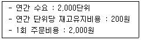
- 32.5일
- 36.5일
- 40.5일
- 44.5일
- 48.5일
(정답률: 52%)
34. 무인 운반기기의 제어방식에 따른 유형으로 옳은 것은?
- 자기 인도방식(Magnetic Guidance Method)은 자동 주행하는 운반기기의 경로를 제어하는 방식으로 바닥에 테이프나 페인트 선을 그려 페인트와 테이프를 광학센서로 식별하여 진로를 결정하는 방식이다.
- 광학식 인도방식(Optical Guidance Method)은 인도용 동선이 바닥에 매설되어 있어서 저주파가 흐르는 동선을 따라 2개의 탐지용 코일로 탐지하여 자동 주행하는 방식이다.
- 전자기계 코딩방식(Electro Mechanical Coding Method)은 트레이에 자기로 코드화한 철판을 붙이고 이를 자기 판독 헤드로 읽게 함으로써 컴퓨터에 정보를 전달하여 제어하는 방식이다.
- 레이저 스캐닝방식(Laser Scanning Method)은 상자에 붙어 있는 바코드 라벨을 정 위치에서 스캐너로 판독하고 컴퓨터에 정보를 전달하여 제어하는 방식이다.
- 자기 코딩방식(Magnetic Coding Method)은 카드 삽입구에 행동지시용 카드를 먼저 삽입, 컴퓨터에 정보를 제공하여 제어하는 방식이다.
(정답률: 42%)
35. 합리적인 하역의 원칙에 관한 설명으로 옳지 않은 것은?
- 활성화의 원칙: 운반활성 지수의 최대화를 지향함
- 인터페이스의 원칙: 공정간의 접점을 원활히 함
- 중력이용의 원칙: 인력작업을 기계화로 대체함
- 이동거리(시간) 최소화의 원칙: 하역작업의 이동거리(시간)를 최소화함
- 시스템화의 원칙: 시스템 전체의 밸런스를 염두에 두고 시너지 효과를 올리기 위함
(정답률: 62%)
36. 선박에 화물을 싣고 내리는 작업으로 작업방식에 따라 접안 하역과 해상 하역으로 나눌 수 있는 작업은?
- Assembling
- Discharging
- Devanning
- Lashing
- Packing
(정답률: 32%)
37. 컨테이너터미널에서 사용되는 하역장비에 관한 설명으로 옳지 않은 것은?
- 리치 스태커(Reach Stacker)는 장비의 회전 없이 붐에 달린 스프레더만을 회전하여 컨테이너를 이적 또는 하역하는 장비이다.
- 무인운반차량(Automated Guided Vehicle)은 무인으로 컨테이너를 이송하는 장비이다.
- 야드 트랙터(Yard Tractor, Y/T)는 야드에서 컨테이너를 이동ㆍ운송하는데 사용되는 이동장비로서 일반 도로 운행이 가능한 장비이다.
- 스트래들 캐리어(Straddle Carrier)는 컨테이너터미널에서 컨테이너를 마샬링 야드로부터 에이프런 또는 CY지역으로 운반 및 적재할 경우에 사용되는 장비이다.
- 윈치크레인(Winch Crane)은 차체를 이동 및 회전시키면서 컨테이너트럭이나 플랫 카(Flat Car)로부터 컨테이너를 하역하는 장비이다.
(정답률: 50%)
38. 전용부두에 접안하여 언로더(Unloader)나 그래브(Grab), 컨베이어벨트를 통해 야적장에 야적되며, 스태커(Stacker) 또는 리클레이머(Reclaimer), 트랙 호퍼(Track Hopper) 등을 이용하여 상차 및 반출되는 화물은?
- 고철
- 석탄 및 광석
- 양회(시멘트)
- 원목
- 철재 및 기계류
(정답률: 56%)
39. 공항에서 항공화물을 운반 또는 하역하는데 사용되지 않는 장비는?
- 이글루(Igloo)
- 트랜스포터(Transporter)
- 트랜스퍼 크레인(Transfer Crane)
- 돌리(Dolly)
- 터그 카(Tug Car)
(정답률: 56%)
40. 항만컨테이너터미널에서 컨테이너 적재를 위해 사용되는 하역장비가 아닌 것은?
- 탑핸들러(Top Handler)
- OHBC(Over Head Bridge Crane)
- RTGC(Rubber-Tired Gantry Crane)
- RMGC(Rail-Mounted Gantry Crane)
- 하이 리프트 로더(High Lift Loader)
(정답률: 55%)
2과목: 물류관련법규
41. 물류정책기본법상 국제물류주선업의 등록을 할 수 있는 자는?
- 피한정후견인
- 「물류정책기본법」을 위반하여 금고 이상의 실형을 선고받고 그 집행이 종료되거나 집행이 면제된 날부터 2년이 지나지 아니한 자
- 「유통산업발전법」을 위반하여 금고 이상의 형의 집행유예를 선고받고 그 유예기간 중에 있는 자
- 「화물자동차 운수사업법」을 위반하여 벌금형을 선고받고 2년이 지나지 아니한 자
- 대표자가 피성년후견인인 법인
(정답률: 40%)
42. 물류정책기본법상 다른 사람에게 자기의 성명 또는 상호를 사용하여 사업을 하게 하거나 그 인증서ㆍ등록증ㆍ지정증 또는 자격증을 대여하지 못하도록 금지되어 있는 자를 모두 고른 것은?
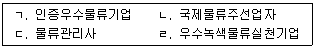
- ㄴ, ㄷ
- ㄱ, ㄴ, ㄹ
- ㄱ, ㄷ, ㄹ
- ㄴ, ㄷ, ㄹ
- ㄱ, ㄴ, ㄷ, ㄹ
(정답률: 68%)
43. 물류정책기본법상 지역물류현황조사에 관한 설명이다. ( )에 들어갈 내용을 바르게 나열한 것은?
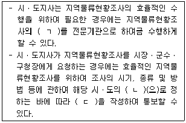
- ㄱ: 전부 ㄴ: 조례 ㄷ: 조사현황
- ㄱ: 전부 또는 일부 ㄴ: 조례 ㄷ: 조사지침
- ㄱ: 일부 ㄴ: 규칙 ㄷ: 조사지침
- ㄱ: 전부 또는 일부 ㄴ: 규칙 ㄷ: 조사현황
- ㄱ: 일부 ㄴ: 조례 ㄷ: 조사내용
(정답률: 62%)
44. 물류정책기본법령상 물류사업의 범위에 관한 대분류와 세분류의 연결이 옳지 않은 것은?
- 화물운송업 - 파이프라인운송업
- 물류시설운영업 - 창고업
- 물류서비스업 - 화물주선업
- 물류시설운영업 - 물류터미널운영업
- 화물운송업 - 항만운송사업
(정답률: 52%)
45. 물류정책기본법령상 국토교통부장관으로부터 물류기업이 행정적ㆍ재정적 지원을 받을 수 있는 물류보안 관련 활동에 해당하지 않는 것은?
- 물류보안 관련 시설ㆍ장비의 개발ㆍ도입
- 물류보안 관련 제도ㆍ표준 등 국가 물류보안 시책의 수립
- 물류보안 관련 교육 및 프로그램의 운영
- 물류보안 관련 시설ㆍ장비의 유지ㆍ관리
- 물류보안 사고 발생에 따른 사후복구조치
(정답률: 50%)
46. 물류정책기본법령상 물류정보화를 통한 물류체계의 효율화 시책에 포함되어 야 할 사항에 해당하지 않는 것은?
- 물류환경의 변화와 전망에 관한 사항
- 물류정보의 연계 및 공동활용에 관한 사항
- 물류정보의 표준에 관한 사항
- 물류정보의 보안에 관한 사항
- 물류분야 정보통신기술의 도입 및 확산에 관한 사항
(정답률: 48%)
47. 물류정책기본법령상 물류신고센터가 화주기업 또는 물류기업 등 이해관계인에게 조정을 권고하는 경우 서면으로 통지하여야 하는 사항을 모두 고른 것은?
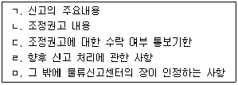
- ㄱ, ㄴ
- ㄴ, ㄷ, ㅁ
- ㄱ, ㄴ, ㄷ, ㄹ
- ㄱ, ㄷ, ㄹ, ㅁ
- ㄴ, ㄷ, ㄹ, ㅁ
(정답률: 49%)
48. 물류정책기본법령상 국가물류정책위원회 위원의 해촉사유에 해당하지 않는 것은?
- 심신장애로 인하여 직무를 수행할 수 없게 된 경우
- 직무와 관련 없는 비위사실이 있는 경우
- 직무태만으로 인하여 위원으로 적합하지 아니하다고 인정되는 경우
- 품위손상으로 인하여 위원으로 적합하지 아니하다고 인정되는 경우
- 위원 스스로 직무를 수행하는 것이 곤란하다고 의사를 밝히는 경우
(정답률: 62%)
49. 물류시설의 개발 및 운영에 관한 법령상 물류단지의 개발에 대한 설명으로 옳지 않은 것은?
- 국가 또는 지방자치단체는 물류단지시설용지와 지원시설용지의 조성비 및 매입비의 전부를 보조하거나 융자할 수 있다.
- 국가 또는 지방자치단체는 물류단지의 원활한 개발을 위하여 물류단지 안의 공동구 등 기반시설의 설치를 우선적으로 지원하여야 한다.
- 시ㆍ도지사 또는 시장ㆍ군수는 물류단지개발사업을 촉진하기 위하여 지방자치단체에 물류단지개발특별회계를 설치할 수 있다.
- 물류단지개발사업의 시행자인 지방자치단체가 실시계획 승인을 받은 경우 그가 조성하는 용지를 분양ㆍ임대받거나 시설을 이용하려는 자로부터 대금의 전부 또는 일부를 미리 받을 수 있다.
- 물류단지지정권자는 물류단지개발사업의 시행자에게 용수공급시설ㆍ하수도시설ㆍ전기통신시설 및 폐기물처리시설을 설치하게 할 수 있다.
(정답률: 44%)
50. 물류시설의 개발 및 운영에 관한 법령상 화물의 운송ㆍ집화ㆍ하역ㆍ분류ㆍ포장ㆍ가공ㆍ조립ㆍ통관ㆍ보관ㆍ판매ㆍ정보처리 등을 위하여 일반물류단지 안에 설치되는 일반물류단지시설에 해당하지 않는 것은?
- 「유통산업발전법」에 따른 공동집배송센터
- 「농수산물유통 및 가격안정에 관한 법률」에 따른 농수산물산지유통센터
- 「화물자동차 운수사업법」에 따른 화물자동차운수사업에 이용되는 차고
- 「철도사업법」에 따른 철도사업자가 그 사업에 사용하는 화물운송ㆍ하역 및 보관 시설
- 「궤도운송법」에 따른 궤도사업을 경영하는 자가 그 사업에 사용하는 화물운송ㆍ하역 및 보관 시설
(정답률: 53%)
51. 물류시설의 개발 및 운영에 관한 법령상 물류시설개발종합계획에 포함되어야 할 사항이 아닌 것은?
- 물류시설의 장래수요에 관한 사항
- 물류시설의 공급정책 등에 관한 사항
- 물류시설의 지정ㆍ개발에 관한 사항
- 물류시설의 개별화ㆍ정보화에 관한 사항
- 물류시설의 기능개선 및 효율화에 관한 사항
(정답률: 57%)
52. 물류시설의 개발 및 운영에 관한 법령상 복합물류터미널사업에 대한 설명으로 옳지 않은 것은?
- 복합물류터미널사업이란 두 종류 이상의 운송수단 간의 연계운송을 할 수 있는 규모 및 시설을 갖춘 물류터미널사업을 말한다.
- 복합물류터미널사업을 경영하려는 자는 국토교통부령으로 정하는 바에 따라 국토교통부장관의 인가를 받아야 한다.
- 복합물류터미널사업의 등록에 따른 권리ㆍ의무를 승계한 자는 국토교통부령으로 정하는 바에 따라 국토교통부장관에게 신고하여야 한다.
- 복합물류터미널사업자는 복합물류터미널사업의 전부 또는 일부를 휴업하거나 폐업하려는 때에는 미리 국토교통부장관에게 신고하여야 한다.
- 국토교통부장관은 복합물류터미널사업자가 다른 사람에게 등록증을 대여한 때에는 등록을 취소하여야 한다.
(정답률: 54%)
53. 물류시설의 개발 및 운영에 관한 법령상 물류단지의 지정에 대한 설명으로 옳은 것은?
- 100만 제곱미터 규모 이하의 일반물류단지는 국토교통부장관이 지정한다.
- 시ㆍ도지사는 일반물류단지를 지정하려는 때에는 일반물류단지개발계획을 수립하여 관계 행정기관의 장과 협의한 후 물류시설분과위원회의 심의를 거쳐야 한다.
- 국토교통부장관이 노후화된 유통업무설비 부지 및 인근 지역에 도시첨단물류단지를 지정하려면 시ㆍ도지사의 신청을 받아야 한다.
- 국토교통부장관 또는 시ㆍ도지사가 일반물류단지를 지정하려면 일반물류단지 예정지역 토지면적의 2분의 1 이상에 해당하는 토지소유자의 동의와 토지소유자의 총수 및 건축물 소유자 총수 각 2분의 1 이상의 동의를 받아야 한다.
- 시ㆍ도지사가 일반물류단지개발계획을 수립할 때까지 일반물류단지개발사업의 시행자가 확정되지 아니한 경우에는 일반물류단지의 지정 후에 이를 일반물류단지개발계획에 포함시킬 수 있다.
(정답률: 42%)
54. 물류시설의 개발 및 운영에 관한 법령상 물류단지의 개발에 관한 기본지침에 포함되어야 할 사항이 아닌 것은?
- 물류단지의 지정ㆍ개발ㆍ지원에 관한 사항
- 「환경영향평가법」에 따른 전략환경영향평가, 소규모 환경영향평가 및 환경영향평가 등 환경보전에 관한 사항
- 문화재의 보존을 위하여 고려할 사항
- 물류단지의 지역별ㆍ규모별ㆍ연도별 배치 및 우선순위에 관한 사항
- 분양가격의 결정에 관한 사항
(정답률: 35%)
55. 물류시설의 개발 및 운영에 관한 법령상 물류단지개발사업의 시행자에 대한 설명으로 옳지 않은 것은?
- 물류단지개발사업의 시행자로 지정받은「민법」또는「상법」에 따라 설립된 법인은 사업대상 토지면적의 2분의 1 이상을 매입하여야 토지등을 수용하거나 사용할 수 있다.
- 물류단지개발사업의 시행자는 물류단지개발실시계획을 수립하여 물류단지지정권자의 승인을 받아야 한다.
- 물류단지지정권자가 물류단지개발사업의 시행자를 지정할 때에는 사업계획의 타당성 및 재원조달능력과 다른 법률에 따라 수립된 개발계획과의 관계 등을 고려하여야 한다.
- 물류단지개발사업의 시행자는 물류단지개발사업 중 용수시설의 건설을 대통령령으로 정하는 바에 따라 지방자치단체에 위탁하여 시행할 수 있다.
- 「한국도로공사법」에 따른 한국도로공사는 물류단지개발사업의 시행자로 지정받을 수 있다.
(정답률: 47%)
56. 물류시설의 개발 및 운영에 관한 법령상 물류터미널 사업자가 물류터미널 공사시행인가를 받은 공사계획에 대해 인가권자의 변경인가를 받아야 하는 경우를 모두 고른 것은?
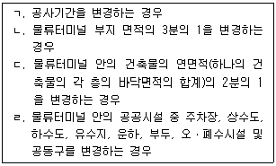
- ㄱ, ㄴ
- ㄷ, ㄹ
- ㄱ, ㄴ, ㄷ
- ㄴ, ㄷ, ㄹ
- ㄱ, ㄴ, ㄷ, ㄹ
(정답률: 54%)
57. 화물자동차 운수사업법상 공영차고지에 관한 설명으로 옳지 않은 것은?
- 「공공기관의 운영에 관한 법률」에 따른 공공기관 중 대통령령으로 정하는 공공기관은 공영차고지를 설치하여 직접 운영할 수 있다.
- 도지사는 공영차고지를 설치하여 운송사업자에게 운영을 위탁할 수 있다.
- 군수는 공영차고지를 설치하여 운송가맹사업자에게 임대할 수 있다.
- 「지방공기업법」에 따른 지방공사가 공영차고지의 설치ㆍ운영에 관한 계획을 수립하는 경우에는 미리 시ㆍ도지사의 인가를 받아야 한다.
- 시ㆍ도지사를 제외한 차고지설치자가 인가받은 공영차고지의 설치ㆍ운영에 관한 계획을 변경하려면 미리 시ㆍ도지사에게 신고하여야 한다.
(정답률: 37%)
58. 화물자동차 운수사업법령상 화물자동차 운송주선사업에 관한 설명으로 옳지 않은 것은?
- 운송주선사업자는 운송주선사업의 허가를 받은 날부터 5년마다 법령상의 허가기준에 관한 사항을 신고하여야 한다.
- 운송주선사업자는 요금을 정하여 미리 신고하여야 한다.
- 운송주선사업의 허가취소 처분을 하려면 청문을 하여야 한다.
- 관할관청은 운송주선사업 허가증을 발급하였을 때에는 그 사실을 협회에 통지하여야 한다.
- 관할관청은 운송주선사업의 허가취소 등의 사유에 해당하는 위반행위를 적발하였을 때에는 특별한 사유가 없으면 적발한 날부터 30일 이내에 처분을 하여야 한다.
(정답률: 29%)
59. 화물자동차 운수사업법상 화물자동차 운송사업의 허가 등에 관한 설명으로 옳지 않은 것은?
- 화물자동차 운송가맹사업의 허가를 받은 자는 화물자동차 운송사업의 허가를 받지 아니한다.
- 개인 운송사업자가 아닌 운송사업자는 주사무소 외의 장소에서 상주(常住)하여 영업하려면 국토교통부령으로 정하는 바에 따라 국토교통부장관의 허가를 받아 영업소를 설치하여야 한다.
- 국토교통부장관은 운송사업자의 허가취소 사유와 직접 관련이 있는 화물자동차의 위ㆍ수탁차주였던 자에 대하여 임시허가를 할 수 있다.
- 국토교통부장관은 화물자동차 운수사업의 질서를 확립하기 위하여 화물자동차 운송사업의 허가를 수반하는 변경허가에 조건 또는 기한을 붙일 수 있다.
- 국토교통부장관은 운송사업자가 사업정지처분을 받은 경우에는 주사무소를 이전하는 변경허가를 하여서는 아니 된다.
(정답률: 54%)
60. 화물자동차 운수사업법령상 화물자동차 운수사업의 운전업무 종사자격에 관한 설명으로 옳은 것은?
- 여객자동차 운수사업용 자동차를 운전한 경력이 있는 자가 화물자동차 운수사업의 운전업무에 종사하려면 그 운전경력이 2년 이상이어야 한다.
- 파산선고를 받고 복권되지 아니한 자는 화물운송 종사자격을 취득할 수 없다.
- 화물운송 종사자격이 취소된 자에게는 500만원 이하의 과태료를 부과한다.
- 국토교통부장관은 화물운송 종사자격을 취득한 자가 화물운송 중에 고의나 과실로 교통사고를 일으켜 사람을 사망하게 한 경우 화물운송 종사자격을 취소하여야 한다.
- 화물운송 종사자격의 효력정지 처분은 처분 대상자의 주소지를 관할하는 시ㆍ도지사가 관장한다.
(정답률: 32%)
61. 화물자동차 운수사업법령상 운송가맹사업자의 허가사항 변경신고 대상에 해당하지 않는 것은?
- 상호의 변경
- 화물취급소의 설치 및 폐지
- 주사무소ㆍ영업소의 이전
- 화물취급소의 이전
- 화물자동차 운송가맹계약의 체결 또는 해제ㆍ해지
(정답률: 44%)
62. 화물자동차 운수사업법상 운수종사자의 준수사항이 아닌 것은?
- 운송사업자에게 화물의 종류ㆍ무게 및 부피 등을 거짓으로 통보하는 행위를 하여서는 아니 된다.
- 고장 및 사고차량 등 화물의 운송과 관련하여 자동차관리사업자와 부정한 금품을 주고받는 행위를 하여서는 아니 된다.
- 일정한 장소에 오랜 시간 정차하여 화주를 호객(呼客)하는 행위를 하여서는 아니 된다.
- 문을 완전히 닫지 아니한 상태에서 자동차를 출발시키거나 운행하는 행위를 하여서는 아니 된다.
- 택시 요금미터기의 장착 등 국토교통부령으로 정하는 택시 유사표시행위를 하여서는 아니 된다.
(정답률: 37%)
63. 화물자동차 운수사업법령상 적재물배상보험등에 관한 설명으로 옳지 않은 것은?
- 적재물배상보험등에 가입하려는 이사화물운송주선사업자는 사고 건당 500만원 이상의 금액을 지급할 책임을 지는 적재물배상보험등에 가입하여야 한다.
- 적재물배상보험등에 가입하려는 운송사업자는 사고 건당 2천만원 이상의 금액을 지급할 책임을 지는 적재물배상보험등에 가입하여야 한다.
- 최대 적재량이 5톤 이상인 특수용도형 화물자동차 중「자동차관리법」에 따른 피견인자동차를 소유하고 있는 운송사업자는 적재물배상보험등에 가입하여야 한다.
- 총 중량이 10톤 이상인 화물자동차 중 국토교통부령으로 정하는 화물자동차를 직접 소유하고 있는 운송가맹사업자는 각 화물자동차별 및 각 사업자별로 사고 건당 2천만원 이상의 금액을 지급할 책임을 지는 적재물배상보험등에 가입하여야 한다.
- 보험회사가「보험업법」에 따라 허가를 받거나 신고한 적재물배상보험요율과 책임준비금 산출기준에 따라 손해배상책임을 담보하는 것이 현저히 곤란하다고 판단한 경우에는 다수의 보험회사등이 공동으로 책임보험계약등을 체결할 수 있다.
(정답률: 44%)
64. 화물자동차 운수사업법령상 화물자동차 운송사업의 폐업에 관한 설명으로 옳지 않은 것은?
- 운송사업자가 화물자동차 운송사업의 전부를 폐업하려면 국토교통부령으로 정하는 바에 따라 미리 신고하여야 한다.
- 운송사업자가 화물자동차 운송사업의 전부를 폐업하려면 미리 그 취지를 영업소나 그 밖에 일반 공중(公衆)이 보기 쉬운 곳에 게시하여야 한다.
- 운송사업자가 화물자동차 운송사업의 폐업신고를 한 경우 해당 화물자동차의 자동차등록증과 자동차등록번호판을 반납하여야 한다.
- 운송사업자가 화물자동차 운송사업의 폐업신고를 하는 경우 관할관청에 화물운송 종사자격증명을 반납하여야 한다.
- 국토교통부장관은 화물자동차 운송사업의 전부폐업 신고에 관한 권한을 시ㆍ도지사에게 위임한다.
(정답률: 36%)
65. 화물자동차 운수사업법령상 화물자동차 운송사업자에 관한 설명으로 옳은 것은?
- 운송사업자는 감차(減車) 조치 명령을 받은 후 2년이 지나지 아니하면 증차를 수반하는 허가사항을 변경할 수 없다.
- 견인형 특수자동차를 사용하여 컨테이너를 운송하는 운송사업자는 운임과 요금을 정하여 미리 국토교통부장관의 인가를 받아야 한다.
- 운송사업자는 화물자동차의 안전운전을 확보하기 위하여 화물자동차 운전자의 교통사고, 교통법규 위반사항 및 범죄경력을 기록ㆍ관리하여야 한다.
- 일반화물자동차 소유 대수가 1대인 운송사업자는 연간 운송계약 화물의 100분의 50 이상을 직접 운송하여야 한다.
- 국토교통부장관은 운송사업자가 정당한 사유 없이 집단으로 화물운송을 거부하여 화물운송에 커다란 지장을 주어 국가경제에 매우 심각한 위기를 초래하면 국무회의의 심의를 거쳐 그 운송사업자에게 업무개시를 명할 수 있다.
(정답률: 40%)
66. 화물자동차 운수사업법상 위ㆍ수탁계약의 해지에 관한 설명이다. ( )에 들어갈 내용으로 옳지 않은 것은?
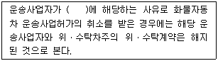
- 부정한 방법으로 화물자동차 운송사업 허가를 받은 경우
- 부정한 방법으로 화물자동차 운송사업 변경허가를 받은 경우
- 화물자동차 운송사업의 허가기준을 충족하지 못하게 된 경우
- 화물자동차 운송사업자의 직접운송 의무를 위반한 경우
- 법인의 임원 중 화물자동차 운송사업 허가를 받을 수 없는 결격사유에 해당하는 자가 있게 되었음에도 3개월 이내에 그 임원을 개임(改任)하지 않은 경우
(정답률: 38%)
67. 유통산업발전법령상 대규모점포를 구성하는 매장에 관한 설명으로 옳지 않은 것은?
- 매장이란 상품의 판매와 이를 지원하는 용역의 제공에 직접 사용되는 장소를 말한다.
- 하나 또는 대통령령으로 정하는 둘 이상의 연접되어 있는 건물 안에 하나 또는 여러 개로 나누어 설치되는 매장이어야 한다.
- 상시 운영되는 매장이어야 한다.
- 매장면적의 합계가 2천제곱미터 이상이어야 한다.
- 개설등록 당시 매장면적의 10분의 1 이상을 변경할 경우 변경등록을 하여야 한다.
(정답률: 62%)
68. 유통산업발전법령상 대규모점포등의 개설등록에 관한 설명으로 옳지 않은 것은?
- 대규모점포를 개설하려는 자는 영업을 시작하기 전에 산업통상자원부령으로 정하는 바에 따라 상권영향평가서 및 지역협력계획서를 첨부하여 특별자치시장ㆍ시장ㆍ군수ㆍ구청장에게 등록하여야 한다.
- 특별자치시장ㆍ시장ㆍ군수ㆍ구청장은 개설등록을 하려는 대규모점포등의 위치가 전통상업보존구역에 있을 때에는 등록을 제한하거나 조건을 붙일 수 있다.
- 특별자치시장ㆍ시장ㆍ군수ㆍ구청장은 개설등록하려는 점포의 소재지로부터 산업통상자원부령으로 정하는 거리 이내의 범위 일부가 인접 특별자치시ㆍ시ㆍ군ㆍ구에 속하여 있는 경우 인접지역의 특별자치시장ㆍ시장ㆍ군수ㆍ구청장에게 개설 등록을 신청 받은 사실을 통보하여야 한다.
- 대규모점포등개설등록신청서를 제출받은 특별자치시장ㆍ시장ㆍ군수 또는 구청장은 별도의 서류확인절차 없이 그 신청에 따라 등록하여야 한다.
- 특별자치시장ㆍ시장ㆍ군수 또는 구청장은 대규모점포등의 개설등록을 한 때에는 그 신청인에게 대규모점포등개설등록증을 교부하여야 한다.
(정답률: 67%)
69. 유통산업발전법상 대규모점포등에 대한 영업시간의 제한 등에 관한 설명으로 옳은 것은?
- 특별자치시장ㆍ시장ㆍ군수ㆍ구청장은 건전한 유통질서 확립, 근로자의 건강권 및 대규모점포등과 중소유통업의 상생발전을 위하여 필요하다고 인정하는 경우 대형마트와 준대규모점포에 대하여 영업시간제한 또는 의무휴업을 명하여야 한다.
- 연간 총매출액 중「농수산물 유통 및 가격안정에 관한 법률」에 따른 농수산물의 매출액 비중이 50퍼센트 이상인 대규모점포등으로서 해당 지방자치단체의 조례로 정하는 대규모점포등에 대하여는 영업시간제한 또는 의무휴업을 명하여서는 아니 된다.
- 특별자치시장ㆍ시장ㆍ군수ㆍ구청장은 영업시간을 제한할 경우 오전 0시부터 오전 11시까지의 범위에서 제한할 수 있다.
- 특별자치시장ㆍ시장ㆍ군수ㆍ구청장은 의무휴업일을 지정할 경우 매월 이틀을 지정하여야 한다.
- 특별자치시장ㆍ시장ㆍ군수ㆍ구청장은 의무휴업일을 지정할 경우 공휴일 중에서 지정하여야 하고, 이해당사자와 합의를 거치더라도 공휴일이 아닌 날을 의무휴업일로 지정할 수는 없다.
(정답률: 56%)
70. 유통산업발전법의 적용이 배제되는 시장ㆍ사업장 및 매장이 아닌 것은?
- 「농수산물 유통 및 가격안정에 관한 법률」제2조에 따른 농수산물도매시장
- 「전통시장 및 상점가 육성을 위한 특별법」제2조에 따른 전통시장
- 「축산법」제34조에 따른 가축시장
- 「농수산물 유통 및 가격안정에 관한 법률」제2조에 따른 민영농수산물도매시장
- 「농수산물 유통 및 가격안정에 관한 법률」제2조에 따른 농수산물종합유통센터
(정답률: 43%)
71. 유통산업발전법령상 용어의 정의에 관한 설명으로 옳지 않은 것은?
- "프랜차이즈형 체인사업"이란 체인본부의 계속적인 경영지도 및 체인본부와 가맹점 간의 협업에 의하여 가맹점의 취급품목ㆍ영업방식 등의 표준화사업과 공동구매ㆍ공동판매ㆍ공동시설활용 등 공동사업을 수행하는 형태의 체인사업을 말한다.
- "유통산업"이란 농산물ㆍ임산물ㆍ축산물ㆍ수산물(가공물 및 조리물을 포함한다) 및 공산품의 도매ㆍ소매 및 이를 경영하기 위한 보관ㆍ배송ㆍ포장과 이와 관련된 정보ㆍ용역의 제공 등을 목적으로 하는 산업을 말한다.
- "임시시장"이란 다수(多數)의 수요자와 공급자가 일정한 기간 동안 상품을 매매하거나 용역을 제공하는 일정한 장소를 말한다.
- "전문상가단지"란 같은 업종을 경영하는 여러 도매업자 또는 소매업자가 일정 지역에 점포 및 부대시설 등을 집단으로 설치하여 만든 상가단지를 말한다.
- "무점포판매"란 상시 운영되는 매장을 가진 점포를 두지 아니하고 상품을 판매하는 것으로서 다단계판매, 전화권유판매, 카탈로그판매, 텔레비전홈쇼핑 등에 해당하는 것을 말한다.
(정답률: 50%)
72. 항만운송사업법상 항만운송사업의 등록에 관한 설명으로 옳지 않은 것은?
- 항만운송사업을 하려는 자는 항만하역사업, 감정사업, 검수사업, 검량사업의 종류별로 등록하여야 한다.
- 항만하역사업과 감정사업은 항만별로 등록한다.
- 항만하역사업의 등록은 이용자별ㆍ취급화물별 또는「항만법」제2조제5호의 항만 시설별로 등록하는 한정하역사업과 그 외의 일반하역사업으로 구분하여 행한다.
- 항만운송사업의 등록을 신청하려는 자는 해양수산부령으로 정하는 바에 따라 사업계획을 첨부한 등록신청서를 제출하여야 한다.
- 해양수산부장관은 감정사업의 등록신청을 받으면 사업계획과 감정사업의 등록기준을 검토한 후 등록요건을 모두 갖추었다고 인정하는 경우에는 해양수산부령으로 정하는 바에 따라 등록증을 발급하여야 한다.
(정답률: 53%)
73. 항만운송사업법령상 항만운송사업의 운임 및 요금에 관한 설명으로 옳지 않은 것은?
- 검량사업의 등록을 한 자는 해양수산부령으로 정하는 바에 따라 요금을 정하여 해양수산부장관에게 미리 신고하여야 한다.
- 항만하역사업의 등록을 한 자는 해양수산부령으로 정하는 항만시설에서 하역하는 화물에 대하여 해양수산부령으로 정하는 바에 따라 그 운임과 요금을 정하여 신고하여야 한다.
- 항만하역사업의 등록을 한 자는 해양수산부령으로 정하는 항만시설에서 해양수산부령으로 정하는 품목에 해당하는 화물에 대하여 신고한 운임과 요금을 변경할 때에는 변경신고를 하여야 한다.
- 해양수산부장관으로부터 적법하게 권한을 위임받은 시ㆍ도지사는 해양수산부령으로 정하는 품목에 해당하는 화물에 대하여 항만하역사업을 등록한 자로부터 운임 및 요금의 설정 신고를 받은 경우 신고를 받은 날부터 30일 이내에 신고수리 여부를 신고인에게 통지하여야 한다.
- 해양수산부장관이 운임 및 요금의 신고인에게 신고수리 여부 통지기간 내에 신고수리 여부를 통지하지 아니하면 그 기간이 끝난 날에 신고를 수리한 것으로 본다.
(정답률: 50%)
74. 항만운송사업법령상 항만시설운영자등이 부두운영계약을 해지할 수 있는 사유로 옳지 않은 것은?
- 「항만법」에 따른 항만재개발사업의 시행 등 공공의 목적을 위하여 항만시설등을 부두운영회사에 계속 임대하기 어려운 경우
- 항만시설등이 멸실되어 부두운영계약을 계속 유지할 수 없는 경우
- 부두운영회사가 항만시설등의 임대료를 2개월 이상 연체한 경우
- 부두운영회사가 항만시설등의 분할 운영 금지 등 금지행위를 하여 부두운영계약을 계속 유지할 수 없는 경우
- 부두운영회사가 항만시설등의 효율적인 사용 및 운영 등을 위하여 항만시설운영자등과 해양수산부장관이 협의한 사항을 정당한 사유 없이 이행하지 아니하여 부두운영계약을 계속 유지할 수 없는 경우
(정답률: 64%)
75. 철도사업법령상 법인의 결격사유에 관한 설명이다. ( )에 들어갈 법률에 해당하지 않는 것은?
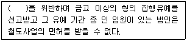
- 「도시철도법」
- 「철도사업법」
- 「한국철도시설공단법」
- 「철도산업발전 기본법」
- 「철도물류산업의 육성 및 지원에 관한 법률」
(정답률: 45%)
76. 철도사업법상 제재수단에 관한 설명이다. ( )에 들어갈 내용을 바르게 나열한 것은?
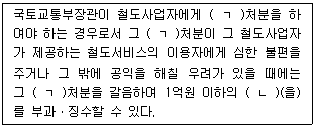
- ㄱ: 사업정지, ㄴ: 과태료
- ㄱ: 사업정지, ㄴ: 과징금
- ㄱ: 면허취소, ㄴ: 과태료
- ㄱ: 면허취소, ㄴ: 과징금
- ㄱ: 사업정지 또는 면허취소, ㄴ: 벌금
(정답률: 56%)
77. 철도사업법령상 국토교통부장관의 인가를 받아야 하는 경우가 아닌 것은?
- 전용철도의 등록을 한 법인이 합병하려는 경우
- 철도사업자가 사업계획 중 여객열차의 운행구간을 변경하려는 경우
- 철도사업자가 공동운수협정에 따른 운행구간별 열차 운행횟수의 5분의 1을 변경하려는 경우
- 철도사업자가 그 철도사업을 양도ㆍ양수하려는 경우
- 국가가 소유ㆍ관리하는 철도시설에 건물을 설치하기 위해 국토교통부장관으로부터 점용허가를 받은 자가 그 점용허가로 인하여 발생한 권리와 의무를 이전하려는 경우
(정답률: 38%)
78. 철도사업법령상 국토교통부장관이 철도사업자에 대하여 사업의 일부정지를 명할 수 있는 경우는?
- 거짓이나 그 밖의 부정한 방법으로 철도사업의 면허를 받은 경우
- 중대한 과실에 의한 1회의 철도사고로 3명의 사망자가 발생한 경우
- 사업 경영의 불확실로 인하여 사업을 계속하는 것이 적합하지 아니할 경우
- 철도사업의 면허기준에 미달하게 되었으나 3개월 이내에 그 기준을 충족시킨 경우
- 「철도안전법」제21조에 따른 요건을 갖추지 아니한 사람을 1년 이내에 2회 운전업무에 종사하게 한 경우
(정답률: 35%)
79. 농수산물 유통 및 가격안정에 관한 법령상 농수산물도매시장에 대한 설명으로 옳지 않은 것은?(문제 오류로 4, 5번이 정답처리 되었습니다. 여기서는 4번을 누르면 정답 처리 됩니다.)
- 시(市)가 지방도매시장을 개설하려면 도지사의 허가를 받아야 한다.
- 중앙도매시장의 개설자는 청과부류와 수산부류에 대하여는 도매시장법인을 두어야 한다.
- 도매시장 개설자는 법인이 아닌 자를 시장도매인으로 지정할 수 없다.
- 중앙도매시장에 두는 도매시장법인은 농림축산식품부장관 또는 해양수산부장관이 도매시장 개설자와 협의하여 지정한다.
- 시장도매인은 해당 도매시장의 도매시장법인ㆍ중도매인에게 농수산물을 판매하지 못한다.
(정답률: 52%)
80. 농수산물 유통 및 가격안정에 관한 법령상 농수산물종합유통센터의 시설기준 중 필수시설에 해당하는 것은?
- 식당
- 휴게실
- 주차시설
- 직판장
- 수출지원실
(정답률: 45%)